01
As histórias parecem peças separadas
Você lembra de personagens, acontecimentos e passagens, mas nem sempre percebe onde cada peça se encaixa na narrativa maior.
A Bíblia de Cima agora chega em uma edição expandida de 117 páginas: 66 perfis livro por livro, mapas panorâmicos, fios temáticos, conexões para leitura lado a lado e trilhas práticas para ajudar você a perceber como a Escritura inteira conversa consigo mesma — do Gênesis ao Apocalipse.
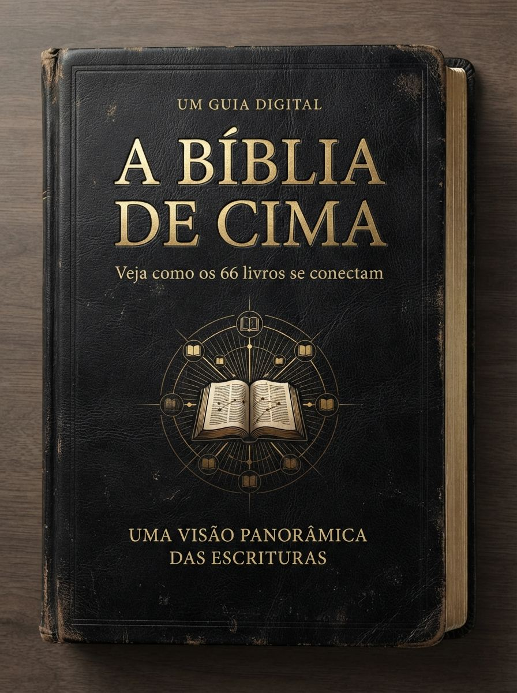
Quando cada livro é estudado isoladamente, o conhecimento cresce — mas a visão do todo nem sempre acompanha.
Você lembra de personagens, acontecimentos e passagens, mas nem sempre percebe onde cada peça se encaixa na narrativa maior.
Sem uma visão panorâmica, conexões de temas, promessas e desenvolvimento bíblico podem passar despercebidas.
A ordem dos livros, os gêneros literários e o lugar de cada texto na história bíblica fazem diferença na compreensão.
Você até reconhece cada livro, mas precisa reconstruir mentalmente as relações toda vez que estuda.
O objetivo de A Bíblia de Cima é oferecer uma estrutura visual para localizar, relacionar e revisar o que você já lê nas Escrituras.
A Bíblia de Cima foi pensada como uma ferramenta visual de consulta: você abre, localiza, compara e volta ao seu estudo com um mapa mental mais organizado.
Você não precisa memorizar tudo. Precisa de uma estrutura à qual possa voltar sempre que quiser se localizar.
Entenda onde um livro está dentro do conjunto bíblico.
Observe conexões com outros livros, temas e testamentos.
Considere o gênero literário e o contexto antes de aprofundar.
Use os materiais como referência para retomar rapidamente o panorama.
As imagens abaixo mostram a proposta visual dos materiais. Clique em qualquer uma para ampliar.
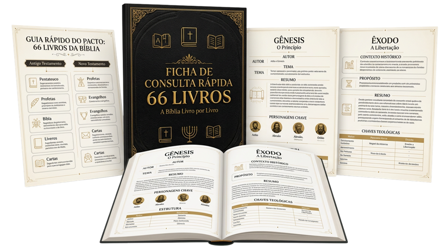
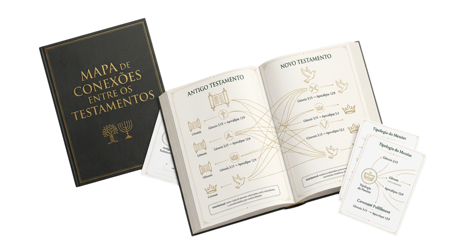
A edição expandida foi reconstruída como um guia editorial completo — não como uma sequência de slides vazios. Cada página precisa entregar contexto, história, movimento narrativo, referências, conexões ou uma ferramenta visual de consulta.
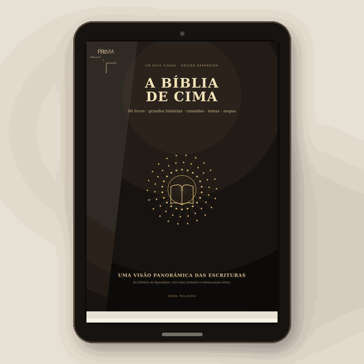
Selecionamos páginas de abertura, mapas, perfis de livros e conexões. As miniaturas possuem marca d'água de prévia; o material entregue não.
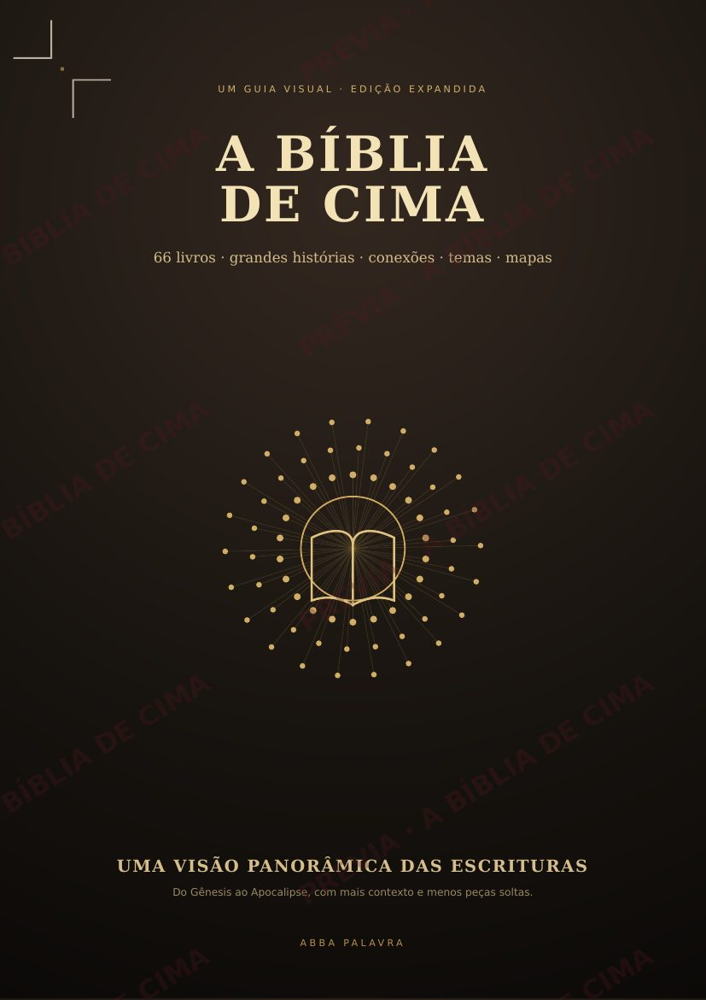
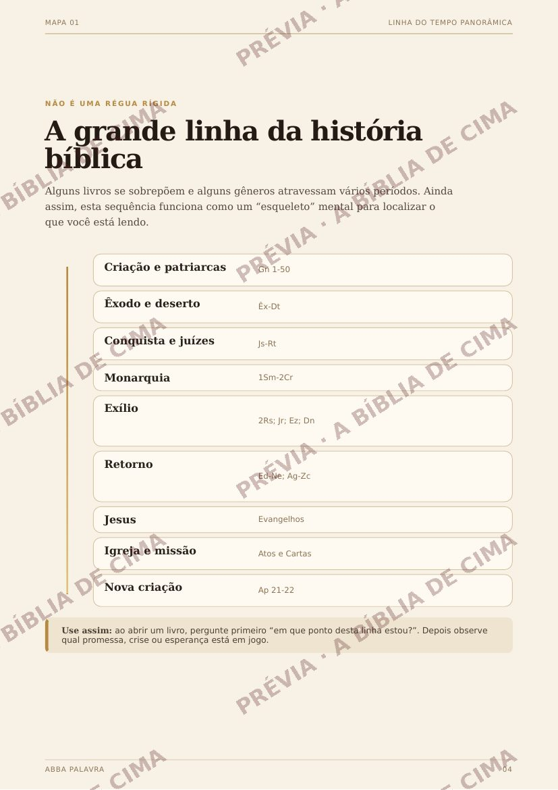
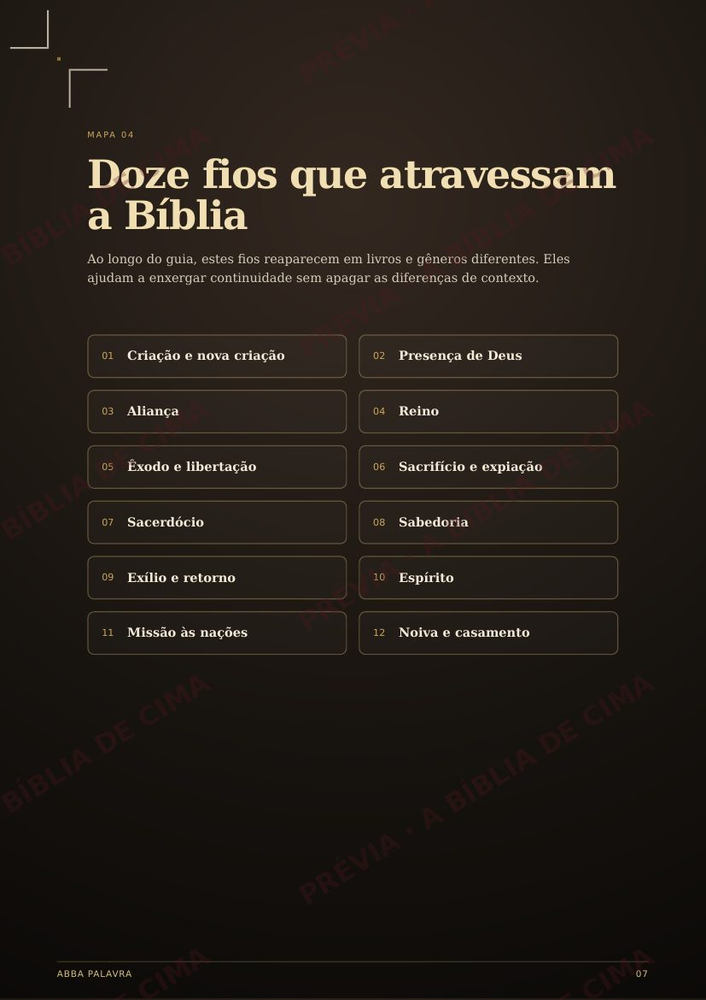
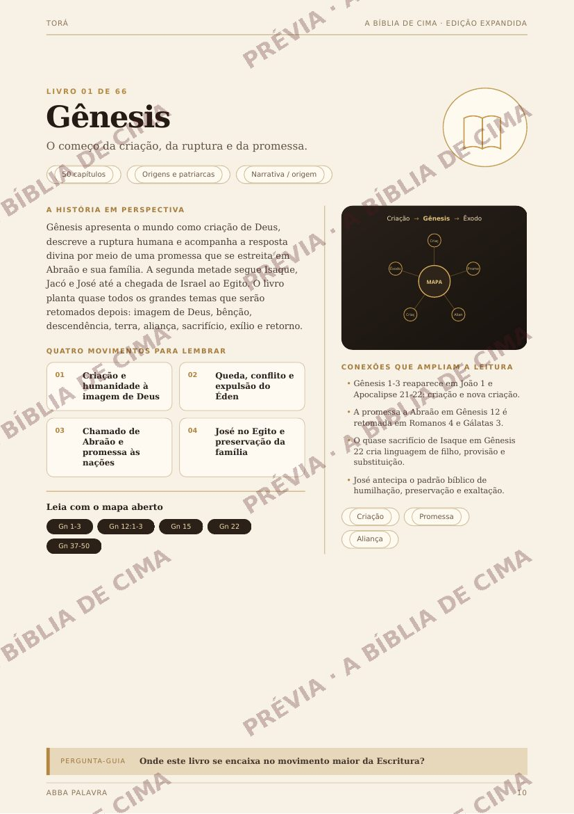
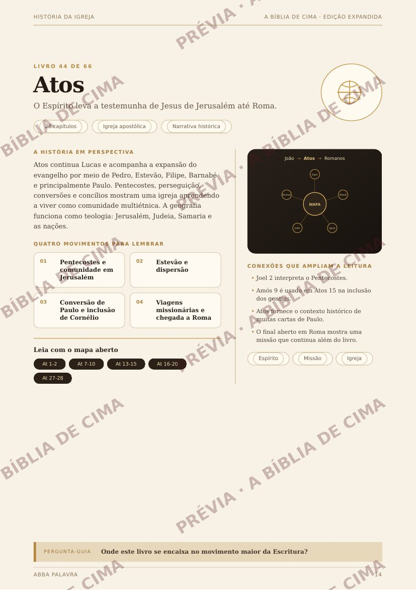
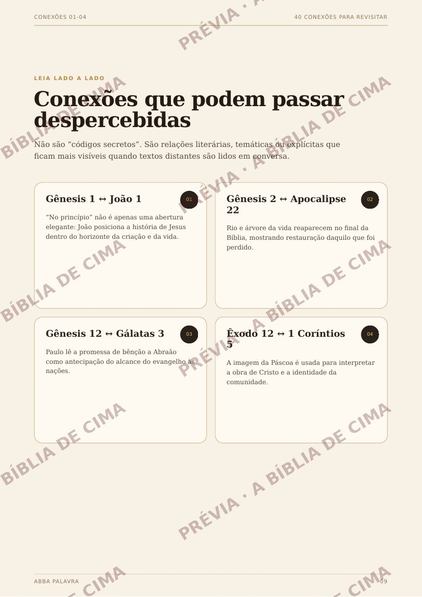
Cada complemento resolve uma dificuldade diferente: localizar os livros, ler cada gênero com mais contexto e enxergar as conexões entre os testamentos.
Uma referência prática para voltar ao essencial de cada livro sem precisar reconstruir o panorama toda vez.
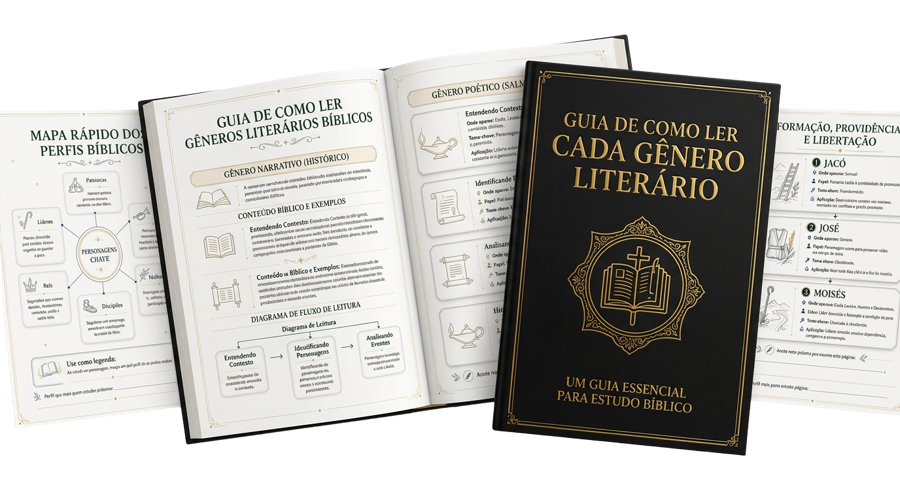
Uma abordagem visual para reconhecer diferenças entre narrativa, poesia, profecia e outros gêneros bíblicos.
Um apoio visual para observar como temas e linhas bíblicas atravessam Antigo e Novo Testamento.
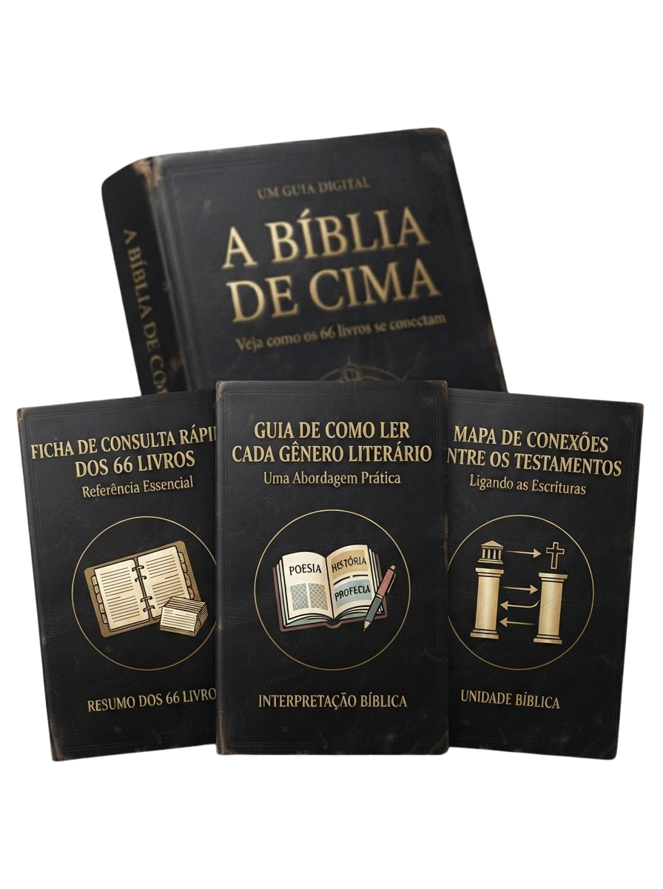
O pacote completo foi montado para você poder alternar entre visão panorâmica, consulta livro por livro, leitura por gênero e conexões entre os testamentos.
Use como apoio para contextualizar sua leitura e revisar rapidamente o panorama bíblico.
Tenha uma referência visual para explicar estruturas e conexões com mais clareza.
Consulte os PDFs no formato que fizer mais sentido para sua rotina de estudo.
Se o produto não fizer sentido para você, solicite o reembolso dentro do prazo da garantia.
Você pode começar apenas com o guia principal ou levar o pacote completo com os 3 materiais complementares.
Para quem quer começar apenas pelo guia principal.
A experiência mais completa para consultar, contextualizar e conectar seus estudos.
Sem letras miúdas: formato, acesso, uso e garantia explicados de forma direta.
Totalmente digital. Após a aprovação da compra, o material fica disponível na área de membros para acesso e download.
Não. A proposta é justamente facilitar a visualização da estrutura bíblica para quem lê a Bíblia e quer compreender melhor como as partes se relacionam.
Sim. Os materiais são em PDF, então você pode consultar no celular ou computador e também imprimir para uso pessoal.
O Básico inclui o guia principal A Bíblia de Cima. O Completo adiciona a Ficha de Consulta Rápida dos 66 Livros, o Guia de Como Ler Cada Gênero Literário e o Mapa de Conexões Entre os Testamentos.
Sim. O material pode ser usado como apoio em estudo pessoal, família, célula, discipulado e momentos de ensino.
Você pode conhecer o material e, se ele não fizer sentido para você, solicitar o reembolso dentro do prazo de 7 dias da garantia.
A Bíblia de Cima foi criada para ser o mapa ao qual você pode voltar sempre que quiser recuperar a visão do todo.
Ver as opções de acesso